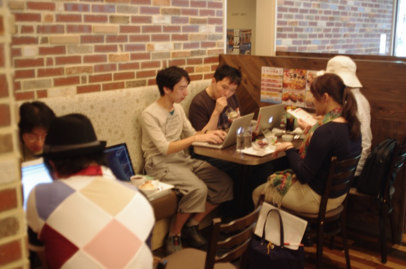

表示テスト
'h' or '?' でヘルプ
- 表示テスト
- 表示テスト
use 5.14.0;
say 'hello';
% echo hello
hello
ようやく始まりました Nagoya.pm
（Nagoya.pm has started）
YAPC::Asia 2011 LT Day1
#yapcasia (2011-10-14)
岩田 享 (IWATA, Susumu) / @issm
自己紹介
- 岩田 享 (IWATA, Susumu) / @issm
- 前夜祭の帰り：乗る電車間違えた
- 本日：乗り換える駅を通り過ぎて遅刻
アジェンダ
- 名古屋でPerlをゆるく語る会
- Nagoya.pm #1
- 名古屋のイメージ？
- Nagoya.pm #2
名古屋でPerlをゆるく語る会
-
ケーキを食べてお話するだけ
- Perlでないこと
- ときどきPerlのこと
- 月1回の開催，13回くらい
- ゆるすぎる
Nagoya.pm #1
Nagoya.pm #1
2011-09-17, Sat
Nagoya.pm #1
発表内容
- DotCloudことはじめ
- Perlを(始める前に|書いてるときに|書いてからも)知っておきたいこと
- FreeBSDでのPerlについて
- WindowsでPerl
Nagoya.pm #1
雑感とか
- 県外からも参加が！
-
Perlな会社があまり見当たらない
- 「サービス運営を通しての経験談」的なお話は期待薄
- 「このモジュール使ってみた」とか増えるといいな
名古屋のイメージ？
活動の盛んな地方PMでは．．．
名古屋のイメージ？
Fukuoka
名古屋のイメージ？
Okayama
名古屋のイメージ？
Hokkaido
名古屋のイメージ？
Sendai
名古屋のイメージ？
Kamakura
名古屋のイメージ？
Niigata
名古屋のイメージ？
一方名古屋では・・・
名古屋のイメージ？
名古屋のイメージ？
s/^/みそ/g;
名古屋のイメージ？
(my $food = 'かつ') =~ s/^/みそ/g;
名古屋のイメージ？
(my $food = 'おでん') =~ s/^/みそ/g;
名古屋のイメージ？
(my $food = 'ごはん') =~ s/^/みそ/g;
名古屋のイメージ？
みそまみれ？
名古屋のイメージ？
そんなことないよ！
名古屋のイメージ？
みそじゃないものもあるよ！
名古屋のイメージ？
みそがダメな方でもOK！
Nagoya.pm #2
Nagoya.pm #2
2011-11-20, Sun
Nagoya.pm #2
Nagoya.pm も
生温かく見守ってやってください！